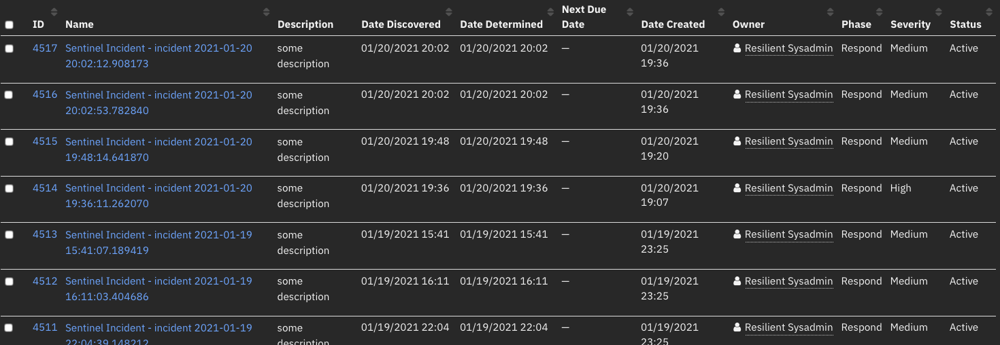

Outbound Email¶
Table of Contents¶
Release Notes¶
Version |
Date |
Notes |
|---|---|---|
v2.1.2 |
05/2024 |
Bug fix for imported packages |
v2.1.1 |
03/2024 |
Bug fix for external paths to templates when running on windows integration server |
v2.1.0 |
5/2023 |
Added message signing and encryption capabilities. Replaced workflows with playbooks |
v2.0.2 |
12/2022 |
Bug fix when specifying your own default template |
v2.0.1 |
10/2022 |
Bug fix |
v2.0.0 |
10/2022 |
Added OAuth 2.0 support for SMTP. Multiple out of box changes |
v1.3.1 |
1/2022 |
Bug fixes for get_datatable function in template_helper.py |
v1.3.0 |
7/2021 |
Username in app.config does not need to be an email |
v1.2.1 |
5/2021 |
Bug fix for python 2 |
v1.2.0 |
4/2021 |
Added capability for task attachments |
v1.1.1 |
2/2021 |
Bug fixes associated with sending attachments |
v1.1.0 |
10/2020 |
Bug fixes and send all or specific attachments |
v1.0.9 |
5/2020 |
Edge Gateway (formerly App Host) compatibility |
v1.0.8 |
4/2020 |
Initial Release |
2.1 Changes¶
In v2.1, the existing rules and workflows have been replaced with playbooks. This change is made to support the ongoing, newer capabilities of playbooks. Each playbook has the same functionality as the previous, corresponding rule/workflow.
If upgrading from a previous release, you’ll notice that the previous release’s rules/workflows remain in place. Both sets of rules and playbooks are active. For manual actions, playbooks have the same name as it’s corresponding rule, but with “(PB)” added at the end.
You can continue to use the rules/workflows. But migrating to playbooks provides greater functionality along with future app enhancements and bug fixes.
Finally, the following Playbooks use an activation form field Template (mail_template_select) which needs to be modified manually to list the labels used for templates specified in app.config:
Outbound Email Reply to Message (PB)
Send Incident Email HTML2 (PB) Example
Send Task Email HTML2 (PB) Example
v2.0 Changes¶
Version 2.0 represents a comprehensive set of changes to make the use of outbound email more out-the-box with inbound mail. This release incorporates many changes which are summarized here:
Unified display of inbound emails with outbound email through a datatable. See Script - Outbound Email Results and [Datatable - Email Conversations].(#datatable—email-conversations).
Auto modification of the Email tab to include email conversations datatable.
Multiple template support defined in the app.config file.
Expanded template capability supporting notes, artifacts and links back to SOAR. See Enhancements for Multiple Templates and Attachment & Notes Inclusion.
Additional header available for outbound email (i.e. message-id, in-reply-to, importance).
A new function to preserve the original outbound email capability and allow all the new functionality in v2.0 to be added. See Function - Outbound Email: Send Email2.
OAuth authentication
Overview¶
IBM QRadar SOAR app for Outbound Email

The Outbound Email App for IBM SOAR provides a way of sending email from the SOAR platform. The email message contains information about the incident that the email action was performed on.
Key Features¶
The Outbound Email App provides the following functionality:
Send email to lists of recipients (to, cc, bcc).
Format email using a predefined html template or specify your own template.
Send attachments with the email at the incident level or task level.
Example rules included at the incident and task levels.
New in version 2.0
Ability to reference additional email headers: message-id, importance, in-reply-to.
Define multiple templates from the app.config file.
Capture outbound email conversations including both inbound and outbound messages.
Expanded template support to include artifact, notes and SOAR links (case and task).
Support for OAuth authentication.
Requirements¶
This app supports the IBM QRadar SOAR Platform and the IBM Cloud Pak for Security.
SOAR platform¶
The SOAR platform supports two app deployment mechanisms, Edge Gateway (formerly App Host) and integration server.
If deploying to a SOAR platform with an Edge Gateway, the requirements are:
SOAR platform >=
50.0.0.The app is in a container-based format (available from the AppExchange as a
zipfile).
If deploying to a SOAR platform with an integration server, the requirements are:
SOAR platform >=
50.0.0.The app is in the older integration format (available from the AppExchange as a
zipfile which contains atar.gzfile).Integration server is running
resilient_circuits.If using an API key account, make sure the account provides the following minimum permissions:
Org Data: Read and Edit
Incident: Read
Functions: Read
Layout: Read, Update
The following SOAR platform guides provide additional information:
App Host Deployment Guide: provides installation, configuration, and troubleshooting information, including proxy server settings.
Integration Server Guide: provides installation, configuration, and troubleshooting information, including proxy server settings.
System Administrator Guide: provides the procedure to install, configure and deploy apps.
The above guides are available on the IBM Knowledge Center at ibm.biz/soar-docs. On this web page, select your SOAR platform version. On the follow-on page, you can find the App Host Deployment Guide or Integration Server Guide by expanding Apps in the Table of Contents pane. The System Administrator Guide is available by expanding System Administrator.
Cloud Pak for Security¶
If you are deploying to IBM Cloud Pak for Security, the requirements are:
IBM Cloud Pak for Security >= 1.10.
Cloud Pak is configured with an Edge Gateway.
The app is in a container-based format (available from the AppExchange as a
zipfile).
The following Cloud Pak guides provide additional information:
App Host Deployment Guide: provides installation, configuration, and troubleshooting information, including proxy server settings. From the Table of Contents, select Case Management and Orchestration & Automation > Orchestration and Automation Apps.
System Administrator Guide: provides information to install, configure, and deploy apps. From the IBM Cloud Pak for Security Knowledge Center table of contents, select Case Management and Orchestration & Automation > System administrator.
These guides are available on the IBM Knowledge Center at ibm.biz/cp4s-docs. From this web page, select your IBM Cloud Pak for Security version. From the version-specific Knowledge Center page, select Case Management and Orchestration & Automation.
Proxy Server¶
The app does not support a proxy server.
Python Environment¶
Python 3.6, 3.9, and 3.11 are supported. Additional package dependencies may exist for each of these packages:
Jinja2>=2.9.6
resilient_circuits>=50.0.0
resilient_lib>=50.0.0
six
BeautifulSoup
python-smail
cryptography
Prerequisites¶
Basic Authentication¶
A password is required for the SMTP server.
Configuration¶
OAuth 2.0 Authorization¶
Setup a web app and note the prerequisite settings above and add them to the
app.configfor the app.
Fetch the tokens¶
Exchange the authorization code for an access and refresh token.
The user sends an HTTP POST request to the authorization server’s token endpoint with the following values:
https://api.authorization-server.com/token
grant_type=authorization_code
&code=123456
&redirect_uri=https://localhost:8080/callback
&client_id=123
&client_secret=456
If the authorization code is valid, the authorization generates an access and refresh token and returns them to the client.
For example:
{
'access_token': 'abcdefg1234567',
'expires_in': 3599,
'refresh_token': 'hijklmn89123456',
'scope': 'https://mail.smtpservice.com/',
'token_type': 'Bearer'
}
Add the refresh token to the app.config for the SOAR app.
Using oauth-utils package¶
Instead of using the manual steps outlined above, the user can simplify the process by using the generate_oauth2_refresh_token utility from the oauth-utils package to generate a refresh token. The oauth-utils package includes setup examples for some popular email providers.
Permissions¶
The user must have permission or authorization to send messages using the SMTP protocol.
NOTE: The SMTP user will use either OAuth 2.0 authorization settings or use a password for basic authentication.
For Google with OAuth2 see: Setting up OAuth 2.0 with Google Cloud.
For Microsoft with OAuth2 see: Using OAuth 2.0 with Microsoft for Office 365 users.
For the oauth-utils package see IBM Resilient Community or IBM X-Force App Exchange.
Installation¶
Install¶
To install or uninstall an App or Integration on the SOAR platform, see the documentation at ibm.biz/soar-docs.
To install or uninstall an App on IBM Cloud Pak for Security, see the documentation at ibm.biz/cp4s-docs and follow the instructions above to navigate to Orchestration and Automation.
App Configuration¶
The following table provides the settings you need to configure the app. These settings are made in the app.config file. See the documentation discussed in the Requirements section for the procedure.
Config |
Required |
Example |
Description |
|---|---|---|---|
smtp_server |
Yes |
|
IP Address or fully qualified domain name for SMTP server. |
smtp_user |
Yes |
|
SMTP authentication user. |
smtp_password |
No |
|
SMTP basic authentication user password. |
client_id |
No |
|
SMTP OAuth 2.0 Authorization client ID |
client_secret |
No |
|
SMTP OAuth 2.0 Authorization client secret. |
scope |
No |
|
SMTP OAuth 2.0 Authorization scope. |
token_url |
No |
|
SMTP OAuth 2.0 Authorization token URL. |
auth_url |
No |
|
SMTP OAuth 2.0 Authorization authorization URL. |
refresh_token |
No |
`` |
SMTP OAuth 2.0 Authorization refresh token. |
from_email_address |
No |
|
Introduced in 1.3.0. Email address for use as email sender. |
smtp_port |
Yes |
|
Defaults to unauthenticated, 587/2525 for TLS. |
smtp_conn_timeout |
Yes |
|
Timeout value in seconds to wait for a connection. |
smtp_ssl_mode |
Yes |
|
Set to ‘starttls’ when using smtp_user and smtp_password. |
smtp_ssl_cafile |
No |
|
TLS certificate setting. Can be a path to a CA bundle or ‘false’. |
template_file |
No |
|
Path to template.jinja for rendering the email body. |
enable_email_conversations |
No |
|
*enhance the ‘email’ tab with email conversation fields and datatable * |
p12_signing_cert |
No |
|
certificate for email signing. In p12 format. |
p12_signing_cert_password |
No |
|
password, if any, needed to unlock private key |
P12 Signing and Unencrypting Certificates¶
The signing and unencrypting certificates are bundled in the pkcs12 format which includes both the email sender’s private key and public certificate needed for signing emails.
The public certificate needs to have the emailProtection trust in order to be used for signing.
It should be noted that this same pkcs12 bundle should be added to the recipients’ email client app. Adding the certificate allows the email client to verify the sender’s email digital signature. If using a self-signed CA certificate with your email certificate, make sure to also add the CA certificate to each recipient’s CA trust store.
Each mail client has it’s own way of importing email certificates. Consult your application’s documentation on how to configure those certificates. Below is how the Thunderbird Email Client imports email certificates used for both email signature verification and for unencrypting recipient emails.
When the certificates are properly imported, your emails will have some indication that the digital signature is verified and, if encrypted, that the message was successfully unencrypted.

Notes¶
The SMTP user will use either OAuth2 2.0 authorization settings or use a password for basic authentication.
The auth_url setting is optional and is not used by the SOAR app itself. It can be used by the generate_oauth2_refresh_token utility from the oauth-utils package to generate a refresh token.
For customers upgrading from a pervious release, the app.config file must be manually edited.
For App Host, the file referenced in
p12_signing_encrypting_certneeds to be in base64 format.
For the oauth-utils package see IBM Resilient Community or IBM X-Force App Exchange.
2.0 Changes¶
In v2.0, an additional section, [fn_outbound_email:templates], is added to track the use of multiple templates. These templates are automatically added to the mail_template_select rule activity field used within the example rules. For MSSP environments, this automatic update capability will not work. It’s recommended that your playbook or workflow use a text activity field instead for template name input.
Below is the section and it’s definitions:
[fn_outbound_email:templates]
## specify templates for email processing. These templates are added to the mail_template_select activity field
# choose a label which will identify the template to use
#labelA=/path/to/template.jinja
#labelB=/path/to/another_template.jinja
When upgrading from previous outbound email app versions, please add this section information to your app.config file manually.
Function - Outbound Email: Send Email¶
Send a plain text or HTML-formatted email with SOAR Incident details in the email body as well as incident attachments added to this outgoing email.

Inputs:
Name |
Type |
Required |
Example |
Tooltip |
|---|---|---|---|---|
|
|
No |
|
Comma separated list of attachments or ‘*’ for all. |
|
|
No |
|
Comma separated list of bcc recipients. |
|
|
No |
|
JINJA template file to use to produce html email content from incident data. This content overrides the use of the |
|
|
No |
|
Already rendered email body content. |
|
|
No |
|
Comma separated list of cc recipients. |
|
|
No |
|
Email sender. |
|
|
No |
|
The SOAR incident_id. |
|
|
No |
|
Email subject. |
|
|
No |
|
Comma separated list of email recipients. |
Outputs:
results = {
"version": "1.0",
"success": true,
"reason": null,
"content": {
"inputs": [
"aExample@email.com",
"Example@email.com",
"",
"",
"[2104] example"
],
"message": null,
"text": "\n\n<table width=\"100%\" >\n<tr>\n <td colspan=\"2\">\n <h3 style=\"color: rgb(68,114,196)\">INCIDENT DETAILS</h3>\n <hr size=\"1\" width=\"100%\" noshade style=\"color:#FFDF57\" align=\"center\"/>\n </td>\n</tr>\n \n\t\n \n <tr>\n <td width=\"100\" style=\"font-family: Calibri; color: rgb(31,73,125); font-weight:bold\">Severity:</td>\n <td style=\"font-family: Calibri; color: rgb(31,73,125)\">Low</td>\n </tr>\n \n \n\t\n \n <tr>\n <td width=\"100\" style=\"font-family: Calibri; color: rgb(31,73,125); font-weight:bold\">Status:</td>\n <td style=\"font-family: Calibri; color: rgb(31,73,125)\">A</td>\n </tr>\n <br>\n \n\t\n \n <tr>\n <td width=\"100\" style=\"font-family: Calibri; color: rgb(31,73,125); font-weight:bold\">Created:</td>\n <td style=\"font-family: Calibri; color: rgb(31,73,125)\">2022-01-25T14:48:32.389000</td>\n </tr>\n <br>\n \n\t\n \n<tr>\n <td colspan=\"2\">\n <br><h3 style=\"color: rgb(68,114,196)\">INCIDENT DESCRIPTION</h3>\n <hr size=\"1\" width=\"100%\" noshade style=\"color:#FFDF57\" align=\"center\"/>\n </td>\n \n\t\n \n</tr>\n</table>\n<br>",
"success": false
},
"raw": "",
"inputs": {
"mail_to": "Example@email.com",
"mail_incident_id": 2104,
"mail_attachments": null,
"mail_subject": "[2104] example",
"mail_body_html": "{% set NOT_FOUND = [\"Not Found!\",\"-\",\"None\",None] %}\n{% macro get_row(label,field_name) -%}\n\t{% set value = template_helper.get_incident_value(incident,field_name) %}\n\t{% set style = \"font-family: Calibri; color: rgb(31,73,125)\" %}\n {% if value and value not in NOT_FOUND and not value.startswith('-') %}\n <tr>\n <td width=\"100\" style=\"{{style}}; font-weight:bold\">{{ label }}</td>\n <td style=\"{{style}}\">{{ value | striptags }}</td>\n </tr>\n {% endif %}\n{%- endmacro %}\n<table width=\"100%\" >\n<tr>\n <td colspan=\"2\">\n <h3 style=\"color: rgb(68,114,196)\">INCIDENT DETAILS</h3>\n <hr size=\"1\" width=\"100%\" noshade style=\"color:#FFDF57\" align=\"center\"/>\n </td>\n</tr>\n {{ get_row('Severity:','severity_code') }}\n {{ get_row('Status:','plan_status') }}<br>\n {{ get_row('Created:','create_date') }}<br>\n {{ get_row('Category:','incident_type_ids') }}\n<tr>\n <td colspan=\"2\">\n <br><h3 style=\"color: rgb(68,114,196)\">INCIDENT DESCRIPTION</h3>\n <hr size=\"1\" width=\"100%\" noshade style=\"color:#FFDF57\" align=\"center\"/>\n </td>\n {{ get_row('Description:','description') }}\n</tr>\n</table>\n<br>\n",
"mail_from": "changeme@resilientsystems.com",
"mail_cc": null
},
"metrics": {
"version": "1.0",
"package": "fn-outbound-email",
"package_version": "1.3.1",
"execution_time_ms": 1977,
"timestamp": "2022-01-25 09:48:57"
}
}
Example Pre-Process Script:
inputs.mail_to = rule.properties.mail_to
inputs.mail_cc = rule.properties.mail_cc
inputs.mail_attachments = rule.properties.mail_attachments
inputs.mail_incident_id = incident.id
inputs.mail_from = "changeme@resilientsystems.com"
inputs.mail_subject = u"[{0}] {1}".format(incident.id, incident.name)
inputs.mail_body_html = """{% set NOT_FOUND = ["Not Found!","-","None",None] %}
{% macro get_row(label,field_name) -%}
{% set value = template_helper.get_incident_value(incident,field_name) %}
{% set style = "font-family: Calibri; color: rgb(31,73,125)" %}
{% if value and value not in NOT_FOUND and not value.startswith('-') %}
<tr>
<td width="100" style="{{style}}; font-weight:bold">{{ label }}</td>
<td style="{{style}}">{{ value | striptags }}</td>
</tr>
{% endif %}
{%- endmacro %}
<table width="100%" >
<tr>
<td colspan="2">
<h3 style="color: rgb(68,114,196)">INCIDENT DETAILS</h3>
<hr size="1" width="100%" noshade style="color:#FFDF57" align="center"/>
</td>
</tr>
{{ get_row('Severity:','severity_code') }}
{{ get_row('Status:','plan_status') }}<br>
{{ get_row('Created:','create_date') }}<br>
{{ get_row('Category:','incident_type_ids') }}
<tr>
<td colspan="2">
<br><h3 style="color: rgb(68,114,196)">INCIDENT DESCRIPTION</h3>
<hr size="1" width="100%" noshade style="color:#FFDF57" align="center"/>
</td>
{{ get_row('Description:','description') }}
</tr>
</table>
<br>
"""
Example Post-Process Script:
if results.success:
noteText = u"""Email Sent if mail server is valid/authenticated\n
<br>From: {0}<br> To: {1}<br> CC: {2}<br> BCC: {3}<br> Subject: {4} <br>
Body: {5} <br>""".format(results.content.inputs[0].strip("u\"[]"), results.content.inputs[1].strip("u\"[]"), results.content.inputs[2].strip("u\"[]"), results.content.inputs[3].strip("u\"[]"), results.content.inputs[4].strip("u\""), results.content.text)
else:
noteText = u"Email NOT Sent\n From: {0}\n To: {1}".format(results.content.inputs[0].strip("u\"[]"), results.content.inputs[1].strip("u\"[]"))
incident.addNote(helper.createRichText(noteText))
Function - Outbound Email: Send Email 2¶
Send a plain text or HTML-formatted email with SOAR incident details in the email body. Additional capability exists to refer to pre-defined templates as well as add contextual email headers. This function replaces the send_email function which remains for legacy use.

Inputs:
Name |
Type |
Required |
Example |
Tooltip |
|---|---|---|---|---|
|
|
No |
|
email address of the email sender. If null, then the app.config from_email_address is used. |
|
|
Yes |
|
comma separated list of recipients |
|
|
No |
|
comma separated list of cc recipients |
|
|
No |
|
comma separated list of blind cc recipients |
|
|
No |
|
- |
|
|
No |
|
body of message sent as is |
|
|
No |
|
comma separated list of incident attachments |
|
|
No |
|
specify Importance (X-Priority) header to use |
|
|
No |
|
specify in-replay-to header to use: ex: 1638585706.2677204.1655401056967@mail.com |
|
|
Yes |
|
- |
|
|
No |
|
inline template as alternative to app.config mail_template_label |
|
|
No |
|
message-id header to use: ex: 1638585706.2677204.1655401056967@mail.com. See pre-processor scripts for auto-generation |
|
|
No |
|
The label of a specific template as defined in app.config. |
|
|
No |
|
Flag to merge |
|
|
No |
—–BEGIN CERTIFICATE—– … —–END CERTIFICATE—– |
Comma separated list of PEM formatted public keys used for encrypting the message for the recipients |
NOTE:
When constructing the public certificates for message encryption, ensure to specify it will be used for email signing. Here’s an example of generating that certificate using openssl:
openssl x509 -req -days 3650 -in smime_user.csr -CA ca.crt -CAkey ca.key -set_serial 1 -out smime_user.crt -addtrust emailProtection -addreject clientAuth -addreject serverAuth -trustout.Some processes for creating public certificates will use headers and trailers such as
-----BEGIN TRUSTED CERTIFICATE-----. These will not be recognized by the software and should be edited to remove the ‘Trusted’ entry.
Outputs:
NOTE: This example might be in JSON format, but
resultsis a Python Dictionary on the SOAR platform.
results = {
"content": {
"mail_body": "\n\u003ch2\u003eIncident Summary\u003c/h2\u003e\n Severity Code: Low\n\u003cbr\u003e\n Plan Status: A\n\u003cbr\u003e\n Created: 2022-08-05 14:03:23.441000\n\u003cbr\u003e\n Incident Type: Lost PC / laptop / tablet\n\u003cbr\u003e\n Task: \u003ca target=\u0027_blank\u0027 href=\u0027https://9.30.55.116:443/#incidents/2139?orgId=201\u0026amp;taskId=994\u0026amp;tabName=details\u0027\u003eNotify carrier/ISP\u003c/a\u003e\n\u003cbr\u003e\n Instructions: \n\u003cbr\u003e\nIf the lost or stolen device has cellular access, call the device service provider and notify them of the device loss."
},
"inputs": {
"mail_attachments": "original_msg,.txt",
"mail_cc": null,
"mail_from": "userA@example.com",
"mail_importance": "normal",
"mail_incident_id": 2139,
"mail_inline_template": "\n\u003ch2\u003eIncident Summary\u003c/h2\u003e\n Severity Code: Low\n\u003cbr\u003e\n Plan Status: A\n\u003cbr\u003e\n Created: 2022-08-05 14:03:23.441000\n\u003cbr\u003e\n Incident Type: Lost PC / laptop / tablet\n\u003cbr\u003e\n Task: \u003ca target=\u0027_blank\u0027 href=\u0027{{ template_helper.generate_task_url(2139,994) }}\u0027\u003eNotify carrier/ISP\u003c/a\u003e\n\u003cbr\u003e\n Instructions: \n\u003cbr\u003e\nIf the lost or stolen device has cellular access, call the device service provider and notify them of the device loss.\n",
"mail_subject": "[2139] Incident generated from email \"send -\u003e receive\" via mailbox outlook Task:Notify carrier/ISP",
"mail_to": "userB@example.com"
},
"metrics": {
"execution_time_ms": 3363,
"host": "localhost",
"package": "fn-outbound-email",
"package_version": "2.0.0",
"timestamp": "2022-08-08 15:37:59",
"version": "1.0"
},
"raw": null,
"reason": null,
"success": true,
"version": 2.0
}
Example Pre-Process Script:
import hashlib
import time
MESSAGE_ID_DOMAIN = "qradarsoar.ibm.com"
inputs.mail_to = rule.properties.mail_to
inputs.mail_cc = rule.properties.mail_cc
inputs.mail_attachments = rule.properties.mail_attachments
inputs.mail_incident_id = incident.id
inputs.mail_from = rule.properties.mail_from
inputs.mail_subject = "[{0}] {1}".format(incident.id, incident.name) if not rule.properties.get('mail_subject') else rule.properties.mail_subject
if rule.properties.get('mail_message_id'):
# generate a message-id
seed_value = str(int(time.time()*1000))
uuid_hash = hashlib.md5(seed_value.encode()).hexdigest()
msg_id = "{}-{}-{}-{}-{}".format(uuid_hash[0:8], uuid_hash[8:12], uuid_hash[12:16], uuid_hash[16:20], uuid_hash[20:])
inputs.mail_message_id = "{}@{}".format(msg_id, MESSAGE_ID_DOMAIN)
if rule.properties.get('mail_in_reply_to') and incident.properties.email_message_id:
inputs.mail_in_reply_to = incident.properties.email_message_id
if rule.properties.get('mail_importance'):
inputs.mail_importance = rule.properties.mail_importance if rule.properties.mail_importance else None
if rule.properties.get('mail_body') and rule.properties.get('mail_body').content:
inputs.mail_body = rule.properties.mail_body.content
elif rule.properties.mail_template_select:
inputs.mail_template_label=rule.properties.mail_template_select
else:
inputs.mail_inline_template = """{% set NOT_FOUND = ["Not Found!","-","None",None] %}
{% set style = "font-family: Calibri; color: rgb(31,73,125)" %}
{% macro get_row(label,field_name) -%}
{% set value = template_helper.get_incident_value(incident,field_name) %}
{% if value and value not in NOT_FOUND and not value.startswith('-') %}
<tr>
<td width="100" style="{{style}}; font-weight:bold">{{ label }}</td>
<td style="{{style}}">{{ value | striptags }}</td>
</tr>
{% endif %}
{%- endmacro %}
<table width="100%" >
<tr>
<td colspan="2">
<h3 style="color: rgb(68,114,196)">INCIDENT DETAILS</h3>
<hr size="1" width="100%" noshade style="color:#FFDF57" align="center"/>
</td>
</tr>
{{ get_row('Incident:','severity_code') }}
{{ get_row('Severity:','severity_code') }}
{{ get_row('Status:','plan_status') }}<br>
{{ get_row('Created:','create_date') }}<br>
{{ get_row('Category:','incident_type_ids') }}
<tr>
<td colspan="2">
<br><h3 style="color: rgb(68,114,196)">INCIDENT DESCRIPTION</h3>
<hr size="1" width="100%" noshade style="color:#FFDF57" align="center"/>
</td>
</tr>
{{ get_row('Description:','description') }}
<tr>
<td width="100" style="{{style}}; font-weight:bold">Incident link</td>
{% set inc_url = template_helper.generate_incident_url(incident.id) %}
<td style="{{style}}"><a target="_blank" href="{{ inc_url }}">{{ incident.id }}</a></td>
</tr>
</table>
<br>
"""
Example Post-Process Script:
# results managed through the Outbound Email Results script which uses the workflow property `outbound_email_results`.
Script - Save Outbound Email Results¶
Save outbound email results in the Email Conversations datatable. This script uses the outbound_email_results workflow or playbook property.
Object: incident
Script Text:
import time
try:
e_results = workflow.properties.outbound_email_results
except:
try:
e_results = playbook.functions.results.outbound_email_results
except:
pass
if e_results:
row = incident.addRow('email_conversations')
row['status'] = "success" if e_results.get('success') else "failure: {}".format(e_results.get('reason'))
row['date_sent'] = int(time.time()*1000)
row['source'] = "outbound"
row['recipients'] = "To: {}\nCC: {}\nBCC: {}".format(e_results.get('inputs', {}).get('mail_to'), e_results.get('inputs', {}).get('mail_cc'), e_results.get('inputs', {}).get('mail_bcc'))
row['from'] = e_results.get('inputs', {}).get('mail_from')
row['subject'] = e_results.get('inputs', {}).get('mail_subject')
row['body'] = e_results.get('content', {}).get("mail_body")
row['attachments'] = e_results.get('inputs', {}).get('mail_attachments')
row['importance'] = e_results.get('inputs', {}).get('mail_importance')
row['in_reply_to'] = e_results.get('inputs', {}).get('mail_in_reply_to')
row['message_id'] = e_results.get('inputs', {}).get('mail_message_id')
else:
incident.addNote("workflow.properties.outbound_email_results not found: {}".format(workflow.properties.keys()))
Data Table - Email Conversations¶
API Name:¶
email_conversations
Columns:¶
Column Name |
API Access Name |
Type |
Tooltip |
|---|---|---|---|
Date Sent |
|
|
- |
Status |
|
|
success/failure |
Source |
|
|
inbound/outbound |
Id |
|
|
inbound email id |
From |
|
|
- |
Recipients |
|
|
To/CC/BCC |
Subject |
|
|
- |
Body |
|
|
- |
Attachments |
|
|
- |
Message Id |
|
|
- |
In Reply To |
|
|
- |
Importance |
|
|
low/normal/high |
Custom Fields¶
Label |
API Access Name |
Type |
Prefix |
Placeholder |
Tooltip |
|---|---|---|---|---|---|
Email Message-ID |
|
|
|
- |
message-id associated with the inbound email message |
Rules¶
Rule Name |
Object |
Workflow Triggered |
|---|---|---|
Example: Send Incident Email HTML |
incident |
|
Example: Send Incident Email HTML2 |
incident |
|
Example: Send Incident Email Text |
incident |
|
Example: Send Task Email HTML |
task |
|
Example: Send Task Email HTML2 |
task |
|
Outbound Email: Reply to Message |
email_conversations |
|
Enhancements for Multiple Templates and Attachment & Notes Inclusion¶
In V2.0, you can defined multiple Jinja templates to support different email messages can be created in the AppHost by navigating to the Outbound Email app > Configuration section. Under App Settings, you can select New File. Copy the file path that you save for this template and set the value for template_file in app.config to this path.
In the default template packaged with this app, data/example_send_email.jinja, there is example logic to include artifact and note data. This logic is commented out in the example template and can be used to:
Include artifact value and description
{% set NOT_FOUND = ["Not Found!","-","None",None] -%}
{% set style = "font-family: Calibri; color: rgb(31,73,125)" -%}
{% macro get_row(label, field_name) -%}
{% set value = template_helper.get_incident_value(incident, field_name) -%}
{% if value and value not in NOT_FOUND and not value.startswith('-') -%}
<tr>
<td width="100" style="{{style}}; font-weight:bold">{{ label }}</td>
<td style="{{style}}">{{ value | safe }}</td>
</tr>
{% endif -%}
{% endmacro -%}
{% macro get_artifact(art) -%}
{% set values = template_helper.get_artifacts(art) -%}
{% for a in values -%}
<tr>
<td width="200" style="{{style}}">{{ a.get("value") | safe }}</td>
{% set descr = a.get("description") if a.get("description") else '-' -%}
<td width="200" style="{{style}}">{{ descr | safe }}</td>
</tr>
{% endfor -%}
{%- endmacro -%}
{% macro get_note(note, get_children=True) -%}
{% set values = template_helper.get_notes(note, get_children) -%}
{% for n in values -%}
{% if n.get("text", "") -%}
<tr>
<td colspan="2" style="{{style}}">{{ n.get("text", "") | safe }}</td>
</tr>
{% endif -%}
{% endfor -%}
{% endmacro -%}
<table width="100%" >
<tr>
<td colspan="2">
<h3 style="color: rgb(68,114,196)">INCIDENT DETAILS</h3>
<hr size="1" width="100%" noshade style="color:#FFDF57" align="center"/>
</td>
</tr>
{{ get_row('Severity:', 'severity_code') }}<br>
{{ get_row('Status:', 'plan_status') }}<br>
{{ get_row('Created:', 'create_date') }}<br>
{{ get_row('Category:', 'incident_type_ids') }}<br>
<tr>
<td colspan="2">
<br><h3 style="color: rgb(68,114,196)">INCIDENT DESCRIPTION</h3>
<hr size="1" width="100%" noshade style="color:#FFDF57" align="center"/>
</td>
</tr>
{{ get_row('Description:', 'description') }}
{# UNCOMMENT TO INCLUDE ARTIFACTS #}
{#
<tr>
<td colspan="2">
<br><h3 style="color: rgb(68,114,196)">INCIDENT ARTIFACTS</h3>
<p style="color: rgb(68,114,196)">Note: Artifacts are included in the e-mail if present in the incident.</p>
<hr size="1" width="100%" noshade style="color:#FFDF57" align="center"/>
</td>
</tr>
{{ get_artifact(artifact) }}
#}
{# UNCOMMENT TO INCLUDE NOTES #}
{#
<tr>
<td colspan="2">
<br><h3 style="color: rgb(68,114,196)">INCIDENT NOTES</h3>
<p style="color: rgb(68,114,196)">Note: Notes are included in the e-mail if present in the incident.</p>
<hr size="1" width="100%" noshade style="color:#FFDF57" align="center"/>
</td>
</tr>
{{ get_note(note, get_children=True) }}
#}
<tr>
<td colspan="2">
<h3 style="color: rgb(68,114,196)">INCIDENT LINK</h3>
<hr size="1" width="100%" noshade style="color:#FFDF57" align="center"/>
</td>
</tr>
<tr>
<td colspan="2">
{% set inc_url = template_helper.generate_incident_url(incident.id) %}
<a target='_blank' href='{{ inc_url }}'>{{ incident.id }}: {{ incident.name }}</a>
</td>
</tr>
</table>
<br>
Include note text (by default also includes all child note data; set `get_children = False` if you would like to exclude child note data).
{# UNCOMMENT TO INCLUDE NOTES #}
{#
<tr>
<td colspan="2">
<br><h3 style="color: rgb(68,114,196)">INCIDENT NOTES</h3>
<hr size="1" width="100%" noshade style="color:#FFDF57" align="center"/>
</td>
{{ get_note(note, get_children=True) }}
</tr>
#}
Incident Links¶
To include a link back to the SOAR incident, add the following information to your template:
{% set inc_url = template_helper.generate_incident_url(incident.id) %}
<a target='_blank' href='{ inc_url }'>{ incident.id }: { incident.name }</a>
Task Links¶
To include a link back to the SOAR task, add the following information to your inline template. Unfortunately, this cannot be added to a template defined in your app.config file.
"Task: <a target='_blank' href='{{{{ template_helper.generate_task_url({inc_id}, {task_id}) }}}}'>{task_name}</a>".format(inc_id=incident.id, task_id=task.id, task_name=task.name)
Troubleshooting & Support¶
Common connection issues with TLS and TroubleShooting¶
Use resilient-circuits selftest -l fn-outbound-email to confirm if your connection is successful.
fn-outbound-email:
SMTP AUTH extension not supported by server.
selftest: failure, Elapsed time: 0.416000 seconds
Email servers are often restrictive on which applications or users are authorized to send emails. For example, if you have 2FA authentication enabled on a gmail account, you must add a specific application password or allow less secure apps. (Not recommended.)
https://hotter.io/docs/email-accounts/app-password-gmail/
https://hotter.io/docs/email-accounts/secure-app-gmail/
Occasionally, mail servers might indicate that emails have been sent successfully (including a successful note on the the associated incident) but they are blocked by the receiving mail server due to insecure spam filters. This is a limitation of SMTP authentication mechanism.
The port for TLS handshakes might also differ between mail servers (587/2525). A short history of port allocation can be found at: https://pepipost.com/blog/25-465-587-2525-choose-the-right-smtp-port/
More info on SMTP protocol:
https://pepipost.com/blog/what-is-smtp
Some mail servers do not work with this level of authentication/protocol.
Message Signing and Encryption¶
The following references can be useful if creating your own email signing certificates.
https://www.dalesandro.net/create-self-signed-smime-certificates/
https://access.redhat.com/solutions/28965
The first link refers to the general procedure for creating an email certificate using a self-signed CA certificate. This procedure is sufficient for use with this app.
The second link refers to a way to designate your email certificate with the correct emailProtection enhanced key usage attribute. My ‘some_extensions.txt` file has the following setting for emailProtection:
[some_ext]
extendedKeyUsage = 1.3.6.1.5.5.7.3.4
The modified command to sign the certificate signing request file is:
openssl x509 -req -days 365 -in your_smime_user.csr -CA your_ca.crt -CAkey your_ca_private.key -set_serial 1 -out your_smime_user.crt -addtrust emailProtection -addreject clientAuth -addreject serverAuth -trustout -extensions some_ext -extfile some_extensions.txt
If this extendedKeyUsage attribute is missing, the certificate bundle is still valid, but your logs will show the following warning which can be ignored:
2023-01-05 21:03:55,584 WARNING [smtp_mailer] Unable to confirm public certificate has trust for 'emailProtection'. Continuing.
For Support¶
This is an IBM supported app. Please search the Community https://ibm.biz/soarcommunity for community assistance and use the My Support link to open a support case.